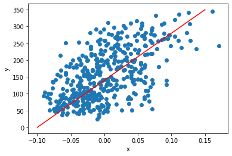
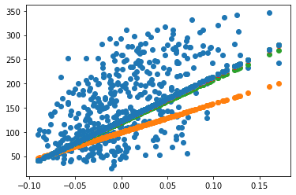
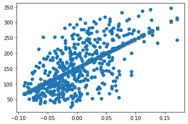
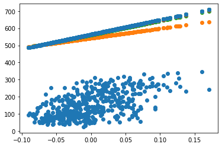
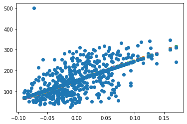

신경망 기초
5 weeks by lsk
Table of Contents
게으름에 기록만 해놓다가 막히는 부분도 있거니와 관심가는 부분이기에 주말에 들여다보고 정리해보고 있다.
1 선형 회귀
통계학에서, 선형 회귀(線型回歸, 영어: linear regression)는 종속 변수 y와 한 개 이상의 독립 변수 (또는 설명 변수) X와의 선형 상관 관계를 모델링하는 회귀분석 기법이다. 한 개의 설명 변수에 기반한 경우에는 단순 선형 회귀, 둘 이상의 설명 변수에 기반한 경우에는 다중 선형 회귀 라고 한다. 참고로, 다변량 선형 회귀 는 종속 변수가 두 개 이상의 경우를 의미한다. 1
1.1 자료
jupyter nbconvert --to script "DataScience/source_code/Ch02.ipynb" jupyter nbconvert --to script "DataScience/source_code/Ch03.ipynb" jupyter nbconvert --to script "DataScience/source_code/Ch04.ipynb" jupyter nbconvert --to script "DataScience/source_code/Ch05.ipynb" jupyter nbconvert --to script "DataScience/source_code/Ch06.ipynb" jupyter nbconvert --to script "DataScience/source_code/Ch07.ipynb" jupyter nbconvert --to script "DataScience/source_code/Ch08.ipynb" jupyter nbconvert --to script "DataScience/source_code/Ch09.ipynb"
1.2 당뇨병에 대한 데이터 구경하기
from sklearn.datasets import load_diabetes diabetes = load_diabetes() print(diabetes)
{'data': array([[ 0.03807591, 0.05068012, 0.06169621, ..., -0.00259226,
0.01990842, -0.01764613],
[-0.00188202, -0.04464164, -0.05147406, ..., -0.03949338,
-0.06832974, -0.09220405],
[ 0.08529891, 0.05068012, 0.04445121, ..., -0.00259226,
0.00286377, -0.02593034],
...,
[ 0.04170844, 0.05068012, -0.01590626, ..., -0.01107952,
-0.04687948, 0.01549073],
[-0.04547248, -0.04464164, 0.03906215, ..., 0.02655962,
0.04452837, -0.02593034],
[-0.04547248, -0.04464164, -0.0730303 , ..., -0.03949338,
-0.00421986, 0.00306441]]), 'target': array([151., 75., 141., 206., 135., 97., 138., 63., 110., 310., 101.,
69., 179., 185., 118., 171., 166., 144., 97., 168., 68., 49.,
68., 245., 184., 202., 137., 85., 131., 283., 129., 59., 341.,
87., 65., 102., 265., 276., 252., 90., 100., 55., 61., 92.,
259., 53., 190., 142., 75., 142., 155., 225., 59., 104., 182.,
128., 52., 37., 170., 170., 61., 144., 52., 128., 71., 163.,
150., 97., 160., 178., 48., 270., 202., 111., 85., 42., 170.,
200., 252., 113., 143., 51., 52., 210., 65., 141., 55., 134.,
42., 111., 98., 164., 48., 96., 90., 162., 150., 279., 92.,
83., 128., 102., 302., 198., 95., 53., 134., 144., 232., 81.,
104., 59., 246., 297., 258., 229., 275., 281., 179., 200., 200.,
173., 180., 84., 121., 161., 99., 109., 115., 268., 274., 158.,
107., 83., 103., 272., 85., 280., 336., 281., 118., 317., 235.,
60., 174., 259., 178., 128., 96., 126., 288., 88., 292., 71.,
197., 186., 25., 84., 96., 195., 53., 217., 172., 131., 214.,
59., 70., 220., 268., 152., 47., 74., 295., 101., 151., 127.,
237., 225., 81., 151., 107., 64., 138., 185., 265., 101., 137.,
143., 141., 79., 292., 178., 91., 116., 86., 122., 72., 129.,
142., 90., 158., 39., 196., 222., 277., 99., 196., 202., 155.,
77., 191., 70., 73., 49., 65., 263., 248., 296., 214., 185.,
78., 93., 252., 150., 77., 208., 77., 108., 160., 53., 220.,
154., 259., 90., 246., 124., 67., 72., 257., 262., 275., 177.,
71., 47., 187., 125., 78., 51., 258., 215., 303., 243., 91.,
150., 310., 153., 346., 63., 89., 50., 39., 103., 308., 116.,
145., 74., 45., 115., 264., 87., 202., 127., 182., 241., 66.,
94., 283., 64., 102., 200., 265., 94., 230., 181., 156., 233.,
60., 219., 80., 68., 332., 248., 84., 200., 55., 85., 89.,
31., 129., 83., 275., 65., 198., 236., 253., 124., 44., 172.,
114., 142., 109., 180., 144., 163., 147., 97., 220., 190., 109.,
191., 122., 230., 242., 248., 249., 192., 131., 237., 78., 135.,
244., 199., 270., 164., 72., 96., 306., 91., 214., 95., 216.,
263., 178., 113., 200., 139., 139., 88., 148., 88., 243., 71.,
77., 109., 272., 60., 54., 221., 90., 311., 281., 182., 321.,
58., 262., 206., 233., 242., 123., 167., 63., 197., 71., 168.,
140., 217., 121., 235., 245., 40., 52., 104., 132., 88., 69.,
219., 72., 201., 110., 51., 277., 63., 118., 69., 273., 258.,
43., 198., 242., 232., 175., 93., 168., 275., 293., 281., 72.,
140., 189., 181., 209., 136., 261., 113., 131., 174., 257., 55.,
84., 42., 146., 212., 233., 91., 111., 152., 120., 67., 310.,
94., 183., 66., 173., 72., 49., 64., 48., 178., 104., 132.,
220., 57.]), 'frame': None, 'DESCR': '.. _diabetes_dataset:\n\nDiabetes dataset\n----------------\n\nTen baseline variables, age, sex, body mass index, average blood\npressure, and six blood serum measurements were obtained for each of n =\n442 diabetes patients, as well as the response of interest, a\nquantitative measure of disease progression one year after baseline.\n\n**Data Set Characteristics:**\n\n :Number of Instances: 442\n\n :Number of Attributes: First 10 columns are numeric predictive values\n\n :Target: Column 11 is a quantitative measure of disease progression one year after baseline\n\n :Attribute Information:\n - age age in years\n - sex\n - bmi body mass index\n - bp average blood pressure\n - s1 tc, T-Cells (a type of white blood cells)\n - s2 ldl, low-density lipoproteins\n - s3 hdl, high-density lipoproteins\n - s4 tch, thyroid stimulating hormone\n - s5 ltg, lamotrigine\n - s6 glu, blood sugar level\n\nNote: Each of these 10 feature variables have been mean centered and scaled by the standard deviation times `n_samples` (i.e. the sum of squares of each column totals 1).\n\nSource URL:\nhttps://www4.stat.ncsu.edu/~boos/var.select/diabetes.html\n\nFor more information see:\nBradley Efron, Trevor Hastie, Iain Johnstone and Robert Tibshirani (2004) "Least Angle Regression," Annals of Statistics (with discussion), 407-499.\n(https://web.stanford.edu/~hastie/Papers/LARS/LeastAngle_2002.pdf)', 'feature_names': ['age', 'sex', 'bmi', 'bp', 's1', 's2', 's3', 's4', 's5', 's6'], 'data_filename': '/Users/sroh/.pyenv/versions/anaconda3-5.3.1/envs/uiap/lib/python3.7/site-packages/sklearn/datasets/data/diabetes_data.csv.gz', 'target_filename': '/Users/sroh/.pyenv/versions/anaconda3-5.3.1/envs/uiap/lib/python3.7/site-packages/sklearn/datasets/data/diabetes_target.csv.gz'}
print(diabetes.data.shape, diabetes.target.shape)
(442, 10) (442,)
print(diabetes.data[0:3])
[[ 0.03807591 0.05068012 0.06169621 0.02187235 -0.0442235 -0.03482076 -0.04340085 -0.00259226 0.01990842 -0.01764613] [-0.00188202 -0.04464164 -0.05147406 -0.02632783 -0.00844872 -0.01916334 0.07441156 -0.03949338 -0.06832974 -0.09220405] [ 0.08529891 0.05068012 0.04445121 -0.00567061 -0.04559945 -0.03419447 -0.03235593 -0.00259226 0.00286377 -0.02593034]]
print(diabetes.target[:3])
[151. 75. 141.]
print(diabetes.data[:, 2])
[ 0.06169621 -0.05147406 0.04445121 -0.01159501 -0.03638469 -0.04069594 -0.04716281 -0.00189471 0.06169621 0.03906215 -0.08380842 0.01750591 -0.02884001 -0.00189471 -0.02560657 -0.01806189 0.04229559 0.01211685 -0.0105172 -0.01806189 -0.05686312 -0.02237314 -0.00405033 0.06061839 0.03582872 -0.01267283 -0.07734155 0.05954058 -0.02129532 -0.00620595 0.04445121 -0.06548562 0.12528712 -0.05039625 -0.06332999 -0.03099563 0.02289497 0.01103904 0.07139652 0.01427248 -0.00836158 -0.06764124 -0.0105172 -0.02345095 0.06816308 -0.03530688 -0.01159501 -0.0730303 -0.04177375 0.01427248 -0.00728377 0.0164281 -0.00943939 -0.01590626 0.0250506 -0.04931844 0.04121778 -0.06332999 -0.06440781 -0.02560657 -0.00405033 0.00457217 -0.00728377 -0.0374625 -0.02560657 -0.02452876 -0.01806189 -0.01482845 -0.02991782 -0.046085 -0.06979687 0.03367309 -0.00405033 -0.02021751 0.00241654 -0.03099563 0.02828403 -0.03638469 -0.05794093 -0.0374625 0.01211685 -0.02237314 -0.03530688 0.00996123 -0.03961813 0.07139652 -0.07518593 -0.00620595 -0.04069594 -0.04824063 -0.02560657 0.0519959 0.00457217 -0.06440781 -0.01698407 -0.05794093 0.00996123 0.08864151 -0.00512814 -0.06440781 0.01750591 -0.04500719 0.02828403 0.04121778 0.06492964 -0.03207344 -0.07626374 0.04984027 0.04552903 -0.00943939 -0.03207344 0.00457217 0.02073935 0.01427248 0.11019775 0.00133873 0.05846277 -0.02129532 -0.0105172 -0.04716281 0.00457217 0.01750591 0.08109682 0.0347509 0.02397278 -0.00836158 -0.06117437 -0.00189471 -0.06225218 0.0164281 0.09618619 -0.06979687 -0.02129532 -0.05362969 0.0433734 0.05630715 -0.0816528 0.04984027 0.11127556 0.06169621 0.01427248 0.04768465 0.01211685 0.00564998 0.04660684 0.12852056 0.05954058 0.09295276 0.01535029 -0.00512814 0.0703187 -0.00405033 -0.00081689 -0.04392938 0.02073935 0.06061839 -0.0105172 -0.03315126 -0.06548562 0.0433734 -0.06225218 0.06385183 0.03043966 0.07247433 -0.0191397 -0.06656343 -0.06009656 0.06924089 0.05954058 -0.02668438 -0.02021751 -0.046085 0.07139652 -0.07949718 0.00996123 -0.03854032 0.01966154 0.02720622 -0.00836158 -0.01590626 0.00457217 -0.04285156 0.00564998 -0.03530688 0.02397278 -0.01806189 0.04229559 -0.0547075 -0.00297252 -0.06656343 -0.01267283 -0.04177375 -0.03099563 -0.00512814 -0.05901875 0.0250506 -0.046085 0.00349435 0.05415152 -0.04500719 -0.05794093 -0.05578531 0.00133873 0.03043966 0.00672779 0.04660684 0.02612841 0.04552903 0.04013997 -0.01806189 0.01427248 0.03690653 0.00349435 -0.07087468 -0.03315126 0.09403057 0.03582872 0.03151747 -0.06548562 -0.04177375 -0.03961813 -0.03854032 -0.02560657 -0.02345095 -0.06656343 0.03259528 -0.046085 -0.02991782 -0.01267283 -0.01590626 0.07139652 -0.03099563 0.00026092 0.03690653 0.03906215 -0.01482845 0.00672779 -0.06871905 -0.00943939 0.01966154 0.07462995 -0.00836158 -0.02345095 -0.046085 0.05415152 -0.03530688 -0.03207344 -0.0816528 0.04768465 0.06061839 0.05630715 0.09834182 0.05954058 0.03367309 0.05630715 -0.06548562 0.16085492 -0.05578531 -0.02452876 -0.03638469 -0.00836158 -0.04177375 0.12744274 -0.07734155 0.02828403 -0.02560657 -0.06225218 -0.00081689 0.08864151 -0.03207344 0.03043966 0.00888341 0.00672779 -0.02021751 -0.02452876 -0.01159501 0.02612841 -0.05901875 -0.03638469 -0.02452876 0.01858372 -0.0902753 -0.00512814 -0.05255187 -0.02237314 -0.02021751 -0.0547075 -0.00620595 -0.01698407 0.05522933 0.07678558 0.01858372 -0.02237314 0.09295276 -0.03099563 0.03906215 -0.06117437 -0.00836158 -0.0374625 -0.01375064 0.07355214 -0.02452876 0.03367309 0.0347509 -0.03854032 -0.03961813 -0.00189471 -0.03099563 -0.046085 0.00133873 0.06492964 0.04013997 -0.02345095 0.05307371 0.04013997 -0.02021751 0.01427248 -0.03422907 0.00672779 0.00457217 0.03043966 0.0519959 0.06169621 -0.00728377 0.00564998 0.05415152 -0.00836158 0.114509 0.06708527 -0.05578531 0.03043966 -0.02560657 0.10480869 -0.00620595 -0.04716281 -0.04824063 0.08540807 -0.01267283 -0.03315126 -0.00728377 -0.01375064 0.05954058 0.02181716 0.01858372 -0.01159501 -0.00297252 0.01750591 -0.02991782 -0.02021751 -0.05794093 0.06061839 -0.04069594 -0.07195249 -0.05578531 0.04552903 -0.00943939 -0.03315126 0.04984027 -0.08488624 0.00564998 0.02073935 -0.00728377 0.10480869 -0.02452876 -0.00620595 -0.03854032 0.13714305 0.17055523 0.00241654 0.03798434 -0.05794093 -0.00943939 -0.02345095 -0.0105172 -0.03422907 -0.00297252 0.06816308 0.00996123 0.00241654 -0.03854032 0.02612841 -0.08919748 0.06061839 -0.02884001 -0.02991782 -0.0191397 -0.04069594 0.01535029 -0.02452876 0.00133873 0.06924089 -0.06979687 -0.02991782 -0.046085 0.01858372 0.00133873 -0.03099563 -0.00405033 0.01535029 0.02289497 0.04552903 -0.04500719 -0.03315126 0.097264 0.05415152 0.12313149 -0.08057499 0.09295276 -0.05039625 -0.01159501 -0.0277622 0.05846277 0.08540807 -0.00081689 0.00672779 0.00888341 0.08001901 0.07139652 -0.02452876 -0.0547075 -0.03638469 0.0164281 0.07786339 -0.03961813 0.01103904 -0.04069594 -0.03422907 0.00564998 0.08864151 -0.03315126 -0.05686312 -0.03099563 0.05522933 -0.06009656 0.00133873 -0.02345095 -0.07410811 0.01966154 -0.01590626 -0.01590626 0.03906215 -0.0730303 ]
데이터중 세번째 컬럼자료와 타겟값으로 그래프를 그려보자
import matplotlib.pyplot as plt
plt.scatter(diabetes.data[:, 2], diabetes.target)
plt.plot([-0.10, 0.15], [0, 350], 'r')
plt.xlabel('x')
plt.ylabel('y')
plt.show()

1.3 주어진 데이터와 값들에 대해 의미있는 하나의 선(모델)을 찾고, 결과값을 모르는 데이터를 넣었을 때 예측할 수 있다면?
위 그래프에서 보여주고 있는 빨간색 선처럼 데이터를 가장 잘 표현할 수 있는 선형 함수를 알고 싶은 거다. 적절한 예시인진 모르겠지만.. 느낌적인 느낌으로 ㅋㅋ 넘어가자
1.3.1 직선방정식
임의의 선을 하나 생각해보자. \(y=ax+b\) 로 많이 쓰지만 머신러닝쪽에서는 weight(가중치)와 bias(편향)으로 많이 표현하므로 \(w\) 와 \(b\) 를 써서 표현해보면,
\begin{equation*} y = wx + b \end{equation*}데이터가 나타내는 값은 \(x_{i}\) 일 때 \(y_{i}\) 이지만 모델링한 이 선형 함수가 나타내는 \(x_{i}\) 일 때 \(y_{i}\) 값은 \(wx_{i}+b\) 이다. 이 값을 \(\hat{y_{i}}\) 이라 할 때, \(x_{i}\) 에 대한 \(\hat{y_{i}}\) 인 점은 \((wx+b)\) 에 의해서 내가 구한 값이 된다. 각 점 \(x\) 에 대해, 내가 구한 이 값 \(\hat{y}\) 과 실제 데이터 \(y\) 의 차이를 줄여나간다면 가장 이상적인 선형 함수를 찾을 수 있을 것이다. 합리적인가?
[ ]데이터의 점과 직선과의 거리는 연산이 많아서 이용이 안되는걸까?
\(y_{i}\) 와 \(\hat{y_{i}}\) 의 차이는 \((\ y-\hat{y}\ )^2\), \(\left\lvert\ y - \hat{y}\ \right\rvert\) 등으로 나타낼 수 있다.
1.3.2 제곱오차(SE) 와 포물선
\(y_{i}\) 와 \(\hat{y_{i}}\) 의 제곱오차는
\begin{equation*} SE = \sum_{i=0}^{n-1} (y_{i} - \hat{y_{i}})^2 \end{equation*}알고자하는 w, b 로 나타내보면,
\begin{equation*} \begin{split} SE & = \sum_{i=0}^{n-1} ({y_{i} - wx_{i} - b})^2 \\ & = ({x_{0}}^2 + \dots + {x_{n-1}}^2)w^2 + \dots \\ & = nb^2 + \dots \end{split} \end{equation*}\(w\) 에 대해 간략히 해보면 \(w\) 의 이차방정식임을 알 수 있고, 이차항의 계수가 \({x_{0}}^2 + \dots + {x_{n-1}}^2\) 인 양수이므로 아래쪽으로 볼록한 최소값이 존재하는 함수임을 알 수 있다. 최소값이 되는 지점의 w값을 찾으면 된다. 최소값을 찾아가는 방법이라 할 수 있는데, 이차방정식 포물선의 성질을 이용한다고 보면 된다.
\(ax^2+bx+c\) \((a>0)\) 인 포물선에 대해,
\begin{equation} 한 점에서 기울기가 음수면, x 값이 커져감에 따라 최소값을 향해 간다. 반대로 기울기가 양수이고, x값이 커져간다면 최소값에서 멀어지고 있는 중이다. \end{equation} \begin{equation} 기울기가 상대적으로 급하게 기울어져 있다면 최소값에서 멀리있다고 볼 수 있다. 반대로 기울기가 완만해져간다면 최소값에 가까워져가는 중이다. \end{equation}이 성질들을 이용하면, \(w_{j}\) 에서 다음 \(w_{j+1}\) 가 얼마만큼 어느방향으로 갈지를 기울기자체 그대로 활용할 수 있다.
1.3.3 Gradient Descent
우리는 최소값을 향해 가야하므로 x값이 최소값 방향으로 움직이려면 기울기부호와 반대방향으로 가야할 것이고\((1)\), 최소값과 먼거리에서는 크게 움직여 효율적이고 빠르게 접근하는게 좋을 것이고 가까워질수록 섬세하게 접근하는게 좋을 것이다\((2)\). 즉, 기울기의 크기와 부호를 둘다 적절하게 활용할 수 있다.
포물선 성질을 활용한 이것을 수식으로 표현해보면,
\begin{equation*} x_{j+1} = x_{j} -\frac{\partial y}{\partial x_{j}} \end{equation*}이런 배경으로 만들어진 게 Gradient Descent,
\begin{align*} x_{j+1} = x_{j} -\gamma_{j}\frac{\partial y}{\partial x_{j}},\ &&n \geq 0 \end{align*}이다. 적절한 \(\gamma_{j}\) 은 기울기값만으로 접근하는것보다 매 step마다 더 효율적으로 접근하게 해줄 것이다. \(( y - \hat{y}\ )\) 가 \(\gamma_{j}\) 역할을 하는 걸로 생각했는데 정리하면서 보니 아니다. 일단 \(\gamma\) 변수는 없다치고 .. 나중에 \(\gamma\) 값을 적절하게 변형시키는 함수도 공부해보자. 두야..
[ ]\(\gamma\) step size 함수 공부해보기
- SE가 최소가 되는 w를 찾기 위해 Gradient Descent를 SE와 w의 관계에 적용
제곱오차식의 \(w\) 에 대해 gradient descent를 적용시켜보자.
\begin{align} w_{j+1} = w_{j} -\frac{\partial SE}{\partial w_{j}},\ &&j \geq 0 \end{align} - \(w_{j}\) 에서의 \(\bigtriangledown SE\) (SE의 변화량)을 가지고 있는 정보로 표현해보자.
\(\bigtriangledown SE\) 인 \(\frac{\partial SE}{\partial w_{j}}\) 를 구해보자. 다시, 제곱 오차식(\(SE\))을 보자.
\begin{equation*} \begin{split} SE & = \sum_{i=0}^{n-1} ({y_{i} - wx_{i} - b})^2 \\ & = ({x_{0}}^2 + \dots + {x_{n-1}}^2)w^2 + \dots \\ & = nb^2 + \dots \end{split} \end{equation*}이고, 이 제곱 오차식을 w에 대해 미분하면,
\begin{equation} \begin{split} \frac{\partial{SE}}{\partial{w}} & = \frac{\partial{\sum_{i=0}^{n-1} ({y_{i} - wx_{i} - b})^2}} {\partial{w}} \\ & = 2\sum_{i=0}^{n-1} ({y_{i} - wx_{i} + b}) \frac{\partial{({y_{i} - wx_{i} - b})}}{\partial{w}} \\ & = 2\sum_{i=0}^{n-1} ({y_{i} - \hat{y_{i}}}) \frac{\partial{({y_{i} - wx_{i} - b})}}{\partial{w}} \\ & = 2\sum_{i=0}^{n-1} ({y_{i} - \hat{y_{i}}})(-x_{i}) \\ & = 2\sum_{i=0}^{n-1} (\hat{y_{i}} - {y_{i}})x_{i} \end{split} \end{equation} - se변화량을 Gradient Descent에 적용
(4)식에 의해 나온 식에서 summation 앞의 2는 \(\gamma_{j}\) 에 의해 보정한다치고(크거나 작게, 스텝마다 다르게..) 우선 제거하자.(내 마음대로..)
\begin{equation*} w_{j+1} = w_{j} - \sum_{i=0}^{n-1} (\hat{y_{i}} - {y_{i}})x_{i} \end{equation*} - 마찬가지로 \(b\) 도 적용해보자
\begin{equation*} \begin{split} SE & = \sum_{i=0}^{n-1} ({y_{i} - wx_{i} - b})^2 \\ & = nb^2 + \dots \end{split} \end{equation*}\(n\) 은 양의 정수이므로 \(w\) 와 마찬가지로 아래쪽으로 볼록한 포물선이므로 동일하게 적용할 수 있다.
\begin{equation} \begin{split} \frac{\partial{SE}}{\partial{b}} & = \frac{\partial{\sum_{i=0}^{n-1} ({y_{i} - wx_{i} - b})^2}} {\partial{b}} \\ & = 2\sum_{i=0}^{n-1} ({y_{i} - wx_{i} + b}) \frac{\partial{({y_{i} - wx_{i} - b})}}{\partial{b}} \\ & = 2\sum_{i=0}^{n-1} ({y_{i} - \hat{y_{i}}}) \frac{\partial{({y_{i} - wx_{i} - b})}}{\partial{b}} \\ & = 2\sum_{i=0}^{n-1} ({y_{i} - \hat{y_{i}}})(-1) \\ & = 2\sum_{i=0}^{n-1} (\hat{y_{i}} - {y_{i}}) \end{split} \end{equation} - w, b 에 대한 gradient Descent
\begin{equation*} w_{j+1} = w_{j} - \sum_{i=0}^{n-1} (\hat{y_{i}} - {y_{i}})x_{i} \\ b_{j+1} = b_{j} - \sum_{i=0}^{n-1} (\hat{y_{i}} - {y_{i}}) \end{equation*}\(y = wx + b\) 인 1차함수가 (\(w_{1}\), \(b_{1}\)), (\(w_{2}\), \(b_{2}\)), \(\dots\), iterate 할 수록 찾고자하는 \(SE\) 의 최소값에 점점 가까워질 것이다.
- 작성된 코드와 비교
루프가 왜 두번 도는지 이해가 되는군.. 좀 헷갈렸었다. w 값을 한번 업데이트하려면 n개의 데이터를 매번 순회해야한다.
오늘은 여기까지.. 이해가 안되서 적어보면서 정리중인데 제대로 이해하고 있는지..
[ ]정리를 하고 다시 코드를 봤는데.. 내가 잘못 이해하고있나보다..T.T 코드와 다르네..
class Neuron: def __init__(self): self.w = 1.0 # 가중치를 초기화합니다 self.b = 1.0 # 절편을 초기화합니다 def forpass(self, x): y_hat = x * self.w + self.b # 직선 방정식을 계산합니다 return y_hat def backprop(self, x, err): w_grad = x * err # 가중치에 대한 그래디언트를 계산합니다 b_grad = 1 * err # 절편에 대한 그래디언트를 계산합니다 return w_grad, b_grad def fit(self, x, y, epochs=100): for i in range(epochs): # 에포크만큼 반복합니다 for x_i, y_i in zip(x, y): # 모든 샘플에 대해 반복합니다 y_hat = self.forpass(x_i) # 정방향 계산 err = -(y_i - y_hat) # 오차 계산 w_grad, b_grad = self.backprop(x_i, err) # 역방향 계산 self.w -= w_grad # 가중치 업데이트 self.b -= b_grad # 절편 업데이트 if (i % 2 == 0): plt.scatter(x, [self.forpass(x_i) for x_i in x]) - review
데이터한개 확인할때마다 w와 b가 조정되네.. w만 비교해보면,
\begin{equation*} \begin{split} w_{j+1} & = w_{j} - \sum_{i=0}^{n-1} (\hat{y_{i}} - y_{i})x_{i} \\ & = w_{j} - \sum_{i=0}^{n-1} (w_{j}x_{i} + b_{j} - y_{i}) \\ \end{split} \end{equation*}평균값에 대한 기울기를 구할 때까지 같은 기울기를 쓴다.
\begin{equation*} \begin{split} w_{i+1} & = w_{i} - (\hat{y_{i}} - y_{i})x_{i} \\ & = w_{i} - (w_{i}x_{i} + b_{i} - y_{i})x_{i} \\ \end{split} \end{equation*}매번 기울기가 i번째 점 따라 변한다. 그 변화량이 다음 점에 영향을 준다.
좀 더 생각해보자 코드를 수식으로 변환 못하겠다;;
- 시각화해서 비교해보자.
[ ]여러개의 그래프로 어떻게 나타내지?
import matplotlib.pyplot as plt import numpy as np class Neuron2: def __init__(self): self.w = 1.0 # 가중치를 초기화합니다 self.b = 1.0 # 절편을 초기화합니다 def forpass(self, x): y_hat = x * self.w + self.b # 직선 방정식을 계산합니다 return y_hat def backprop(self, x, err): w_grad = x * err # 가중치에 대한 그래디언트를 계산합니다 b_grad = 1 * err # 절편에 대한 그래디언트를 계산합니다 return w_grad, b_grad def fit(self, x, y, epochs=1000): for i in range(epochs): # 에포크만큼 반복합니다 w_grad = 0 b_grad = 0 for x_i, y_i in zip(x, y): # 모든 샘플에 대해 반복합니다 y_hat = self.forpass(x_i) # 정방향 계산 err = -(y_i - y_hat) # 오차 계산 w_grad_seg, b_grad_seg = self.backprop(x_i, err) # 역방향 계산 # w_grad, b_grad = self.backprop(x_i, err) # 역방향 계산 # self.w -= w_grad # self.b -= b_grad w_grad += w_grad_seg b_grad += b_grad_seg w_grad = w_grad / len(x) b_grad = b_grad / len(x) self.w -= w_grad # 가중치 업데이트 self.b -= b_grad # 절편 업데이트 if (i % 2 == 0): plt.scatter(x, [self.forpass(x_i) for x_i in x]) x = diabetes.data[:, 2] y = diabetes.target plt.scatter(x, y) neuron = Neuron() neuron.fit(x, y) plt.show()
plt.scatter(x, y) neuron2.fit(x, y) plt.show()

너무 천천히 수렴하는 거 같은데.. 그리고 summation 결과값에 평균을 내야 제대로 표현되는거 같다.
y2 = y.copy() y2[-1] = 500 print(y2[-1])
500.0
plt.scatter(x, y2) neuron = Neuron() neuron.fit(x, y2) plt.show()

첫번째 코드는 예상했던대로 마지막 $y$가 이상값이면 이 값이 영향을 준다. weght 영향은 크게 안 받나? bias 값에 영향을 많이 주는군. 기울기는 변화가 없네..
plt.scatter(x, y2) neuron2.fit(x, y2) plt.show()

두번째 코드는 평균값에 대한 기울기라서 크게 영향을 받지 않는다.
1.4 경사 하강법으로 학습하는 방법
polyfit을 쓰면 안되나? 쓰면 된다. 하지만, 함수를 만들줄 알고 설계도 해볼 목적으로..
x = diabetes.data[:, 2] y = diabetes.target
# Out[917]:
w = 1.0 b = 1.0
x[0]에서 w와 b를 임의로 정했을 때 yhat(예상값)을 출력해본다.
y_hat = x[0] * w + b print(y_hat)
1.0616962065186886
print(y[0])
151.0
w_inc = w + 0.1 y_hat_inc = w_inc * x[0] + b print(y_hat_inc)
1.0678658271705574
w의 변화량에 대한 예측값의 변화량
w_rate = (y_hat_inc - y_hat) / (w_inc - w) print(w_rate)
0.061696206518688734
…
1.5 선형 회귀 심플 뉴런
1.6 분류하는 뉴런
이진 분류
Footnotes:
wikipedia